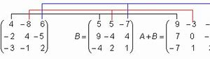
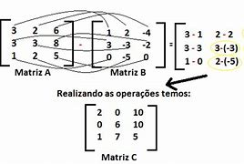
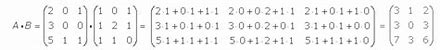

-As operações estão sendo feitas com números aleatórios
A soma de matrizes é uma operação que envolve a adição dos elementos correspondentes de duas matrizes do mesmo tamanho. Ela é realizada somando os elementos nas mesmas posições em ambas as matrizes para obter uma nova matriz resultante.
A subtração de matrizes é uma operação que envolve a subtração dos elementos correspondentes de duas matrizes do mesmo tamanho. Assim como a soma de matrizes, a subtração também é realizada elemento por elemento, resultando em uma nova matriz.
Para multiplicarmos uma matriz precisamos ver se a matriz A é igual a B sendo quadrada (matriz A com o mesmo número de colunas do que as linhas da matriz B).
